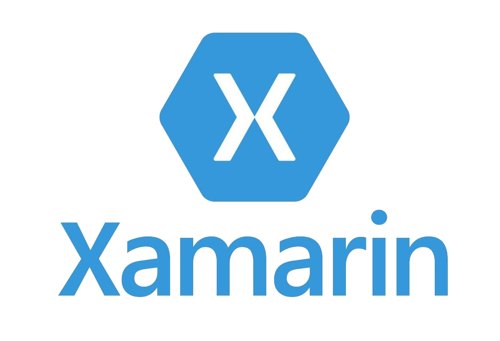
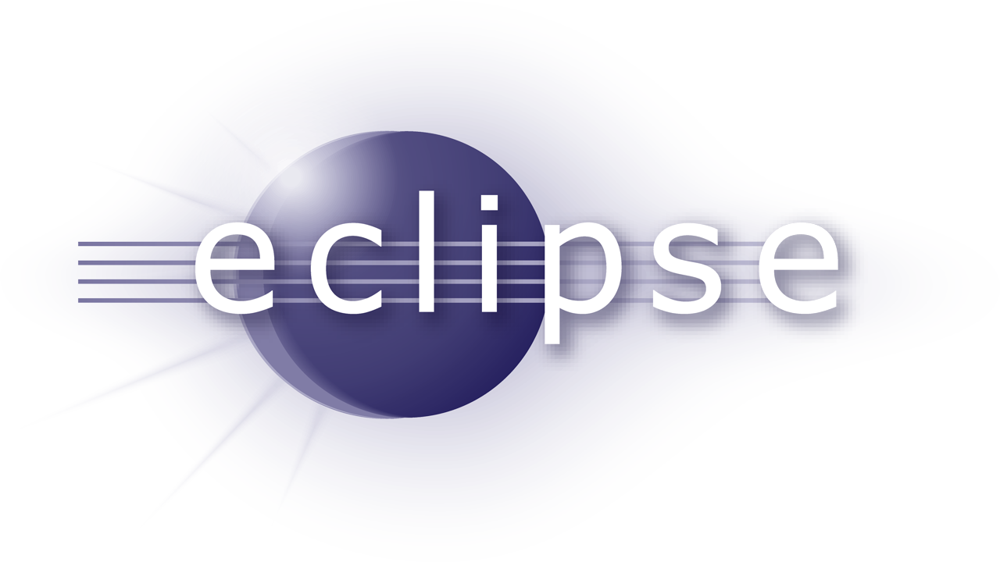

IDE - их виды, плюсы и минусы
IDE (Integrated Development Environment - интегрированная среда разработки) - комплекс программных средств, используемый программистами для разработки программного обеспечения (ПО). IDE (Integrated Development Environment - интегрированная среда разработки) - комплекс программных средств, используемый программистами для разработки программного обеспечения (ПО).
Среда разработки включает в себя:
- Текстовый редактор
- Компилятор и/или интерпретатор
- Средства автоматизации сборки
- Отладчик
Интегрированные среды разработки были созданы для того, чтобы максимизировать производительность программиста благодаря тесно связанным компонентам с простыми пользовательскими интерфейсами. Это позволяет разработчику сделать меньше действий для переключения различных режимов, в отличие от дискретных программ разработки. Однако так как IDE является сложным программным комплексом, то среда разработки сможет качественно ускорить процесс разработки ПО лишь после специального обучения. IDE обычно представляет собой единственную программу, в которой проводится вся разработка. Она, как правило, содержит много функций для создания, изменения, компилирования, развертывания и отладки программного обеспечения. Цель интегрированной среды заключается в том, чтобы объединить различные утилиты в одном модуле, который позволит абстрагироваться от выполнения вспомогательных задач, тем самым позволяя программисту сосредоточиться на решении собственно алгоритмической задачи и избежать потерь времени при выполнении типичных технических действий (например, вызове компилятора). Таким образом, повышается производительность труда разработчика. Также считается, что тесная интеграция задач разработки может далее повысить производительность за счёт возможности введения дополнительных функций на промежуточных этапах работы. Например, IDE позволяет проанализировать код и тем самым обеспечить мгновенную обратную связь и уведомить о синтаксических ошибках.
Ниже приведены наиболее используемые IDE и ссылки на их скачивание:
1. Visual StudioОписание: Одна из старейших программных продуктов для создания как консольных приложений, так и обладающие графическим интерфейсом. Добавление сторонних плагинов позволяет серьёзно расширить функциональность среды, в том числе до кроссплатформенного состояния. Достоинства: Быстрое написание кода, легкие отладка и диагностика, частое тестирование и уверенный выпуск релизов, расширение и настройка в соответствии со своими потребностями, эффективная совместная работа. Недостатки: Новичку будет сложно самостоятельно разобраться с Visual Studio без прохождения специальных курсов и чтения литературы. Это продукт скорее для опытных разработчиков, обращающих внимание на качество редактора и функции тестирования. Ссылка на скачивание Visual Studio |
|
2. Android StudioОписание: Относительно молодая и стремительно развивающаяся IDE, ориентированная на разработчиков приложений для Android. Данный комплект обладает встроенным пакетом Android SDK. Также эта среда предоставляет гибкий алгоритм создания на основе Grandle. Кроме того, приложение поддерживает Google Cloud Platform. Помимо этого, имеются интегрированные шаблоны служб Google и разных гаджетов. К тому же есть встроенный редактор макетов. Достоинства: Программа способна эмулировать экранные клавиши. Кроме того, есть возможность создавать разные варианты разработки. Также есть возможность добавлять подписи программ. Помимо этого, имеется функция Lint для настройки производительности и устранения проблем совместимости. К тому же есть версии среды для разных ОС. Недостатки: Отсутствие русскоязычной локализации. Все средства пакета требуют довольно много места на диске. Ссылка на скачивание Android Studio |
|
3. XCodeОписание: IDE, ориентированная на создание приложений для OS X и iOS. Для использования языков Objective C и Swift на сегодня это лучшее, а для некоторых задач и вовсе единственное решение.Достоинства: Бесплатная, часто выпускаются обновления, поддержка C/C++, подсветка синтаксиса, автодополнение кода, мощные инструменты для измерения производительности. Недостатки: Многие разработчики жалуются на стабильность среды, вынуждающую вносить дополнительные изменения в свои проекты после выхода очередной версии. Кроме того, XCode относительно сложная IDE для самопознания новичком. Ссылка на скачивание XCode |
|
|  | 4. Xamarin StudioОписание: Популярный инструмент разработки приложений под Windows, Phone, Android и iOS, использующий по сути только один язык — C#. Помимо непосредственно Xamarin Studio вы также можете пользоваться плагином для Visual Studio.Достоинства: Единый стек технологий для разработки на всех платформах, производительность близка к нативной, нативный UI, совместимость c оборудованием, open Source-технологии с корпоративной поддержкой, простая поддержка, полный пакет инструментов разработки. Недостатки: Задержки с обновлениями платформ, ограниченный доступ к open-source библиотекам, ограниченность экосистемы, требование к базовым знаниям языка программирования, не подходит для приложений с высокопроизводительной графикой, большой размер приложений, сложности с интеграцией. Ссылка на скачивание Xamarin Studio |
5. IntelliJ IDEAОписание: IDE, разработанная компанией JetBrains, позволяющая создавать программы на множестве популярных языков, среди которых Java, JavaScript, Python, Ruby, Groovy, Scala, PHP, C, C++.Достоинства: Мощный редактор кода, подсветка синтаксиса, автоимпортирование с удалением ненужных импортов, интеграция с Git, увеличение производительности команды разработчиков. Недостатки: Производительность, томительное ожидание выполнения компиляции/перекомпиляции. Ссылка на скачивание IntelliJ IDEA |
|
|  | 6. EclipseОписание: Свободная интегрированная среда разработки модульных кроссплатформенных приложений. Развивается и поддерживается Eclipse Foundation. Среда разработки, изначально ориентированная на работу с Java, прославилась большим количеством внешних модулей, существенно расширяющих её функциональность (в том числе, это касается количества поддерживаемых языков).Достоинства: Кроссплатформенность, портабельность, легкость файлов среды (быстрый запуск IDE), легкий интерфейс, подключаемые плагины и модули, интеграция с JD-GUI, постоянное обновление версий среды разработки, поддержка многих языков (в том числе и русского), является бесплатной, среда имеет промышленный уровень, является гибкой. Недостатки: Тяжелое понимание интерфейса, отсутствие некоторых "горячих" кнопок, отсутствие автоопределения JDK, существенная нехватка документации, нет единого сообщества разработчиков. ССылка на скачивание Eclipse |
7. NetBeansОписание: Свободная интегрированная среда разработки приложений на языках программирования Java, Python, PHP, JavaScript, C, C++, Ада и ряда других.Достоинства: Кроссплатформенность, малый объем, простота в использовании, в некоторых случаях автозавершение текста, поддержка CVS, разные полезные функции, полностью настраиваемый интерфейс. Недостатки: Отсутствие интегрированной поддержки SVN, отсутствие встроенной интерактивной системы справки по тому языку, для которого это IDE предназначено, несколько большое потребление памяти ввиду использования Java, в некоторых случаях авто-завершение текста предлагает совсем не то что нужно. ССылка на скачивание NetBean |
|
8. PhpStormОписание: Коммерческая кросс-платформенная интегрированная среда разработки для PHP. Разрабатывается компанией JetBrains на основе платформы IntelliJ IDEA. PhpStorm представляет собой интеллектуальный редактор для PHP, HTML и JavaScript с возможностями анализа кода на лету, предотвращения ошибок в коде и автоматизированными средствами рефакторинга для PHP и JavaScript.Достоинства: Функционал и удобство, плагины, нормальный интерфейс, не тормозит, стабильность работы, хороший и понятный интерфейс. Недостатки: Нельзя использовать для редактирования одного файла (надо создавать проекты и держать файлы в них), наличие платной подписки. ССылка на скачивание PhpStorm |
|
9. PyCharmОписание: Интегрированная среда разработки для языка программирования Python. Предоставляет средства для анализа кода, графический отладчик, инструмент для запуска юнит-тестов.Достоинства: Понятный интерфейс для работы с Git, простая организация проектов, удобный автокомплит, тесная интеграция с Django, наличие удобных "горячих" клавиш, авторефакторинг кода, приятный интерфейс, нативное развертывание(deployment), редактор HTML и JS, очень быстрый. Недостатки: Неудобный интерфейс в Linux ССылка на скачивание PyCharm |